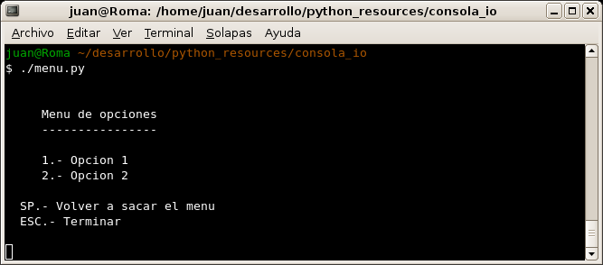
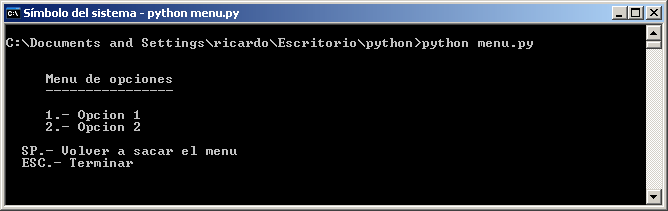

|
Módulo pyconsola_io (Python) |
Pequeño módulo en python que implementa la función getkey() para poder leer una tecla del teclado sin tener que esperar a pulsar enter. Esta función es muy útil para implementar menúes en la consola.
Yo utilizo estas rutinas para hacer programas de prueba para el manejo de robots. Por ejemplo, una aplicación de prueba que me permita mover un robot utilizando las teclas (Normalmente usando las teclas O, P, Q, A, a las que me acostumbré cuando jugaba con el Spectrum ;-)
El módulo console_io también está disponible en C
Lenguaje de programación: Python
Sistema operativo: Multiplataforma. Probado en Linux y Windows
El siguiente ejemplo muestra cómo hacer un menú con 2 opciones:
Aquí se muestra un pantallazo de su funcionamiento en una consola Linux:

Y aquí funcionando en una ventana de ms-dos en un Windows XP:

Para probarlo descomprimir el fichero pyconsola_io.zip en el directorio de trabajo y ejecutar:
python menu.py
Chris Liechti
Licencia GPL. Se conceden permisos para copiar, distribuir, modificar y redistribuir las modificaciones.
El módulo consola_io se han creado a partir de los ejemplos escritos por Chris Liechti para el modulo pyserial.
|
Software para descargar |
|
Módulo consola_io.py y ejemplo menu.py |
Módulo Pyserial del que se ha partido
05/Abril/2007: Publicada primera versión pyConsola_io
A Ricardo Gómez y Andrés Prieto-Moreno por probar los ejemplos en Windows. Muchas gracias